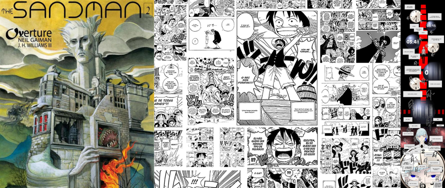

História em quadrinhos (HQ) é o nome dado a decima primeira Arte presente no mundo, onde se narra histórias através de quadros, normalmente de forma horizontal.
No mundo há varias outras vertentes das HQs, por exemplo no Japão eles tem seu próprio formato de história em quadrinhos chamada Mangá, que é lida de forma diferente da HQ e tem efeitos visuais em preto e branco. Também tem o Manhua (Chines),
Manhwa (Coreano) entre outros.
As histórias possuem fundamentos básicos de narrativas: enredo, personagens, tempo lugar e desfecho. Por conter efeito visual elas contem linguagem verbal e não verbal, muitas das vezes usam mais imagem para expressar sentimentos do que
palavras.
Existem diversos recursos gráficos para dar significado ao texto também, como por exemplo o balão de fala, que dependendo da forma tem um significado de exaltação, grito, sussurro, pensamento etc...
Também utiliza muito as onomatopeias, palavras que tentam reproduzir o som de objetos ou ações, como o “tic-tac” do relógio.

Origem das Histórias em quadrinhos:
A história em quadrinhos no ocidente surge em 1894 nos EUA na revista Truth, com a história “The Yellow Kid” do autor americano Richard Outcult. The Yellow Kid, é uma narrativa das peripércias de uma criança americana que vivia nos guetos
de Nova Iorque, que sempre vestida de amarelo.
Mas a verdadeira origem das histórias em quadrinhos vem antes no oriente no século XVIII, quando a palavra Manhua começou a ser utilizada na pintura chinesa conhecida como sumi-ê.
O Mangá e Manhua só começaram a ter a aparência dos tempos de hoje depois da influência ocidente.
Ao longo dos anos as HQs, foram divulgadas em vários tipos de mídias, como jornal, revista e livros (Da própria HQ) e foi acompanhado a evolução da sociedade.
Atuamente muitas Historias em quadrinhos estão na Web, são publicadas na Web antes mesmo de sair no nas revistas em quadrinhos e revistas.
Ao longo da história a HQ não veio só como história divertidas para crianças ler e sim como toda mídia teve influências sobre a sociedade, dou um pequeno exemplo com o vídeo a seguir:
Onde encontrar?
Com o avanço da tecnologia vários dos quadrinhos que antigamente só era encontrada em banca de revistas e livrarias, com o tempo está migrando para internet.